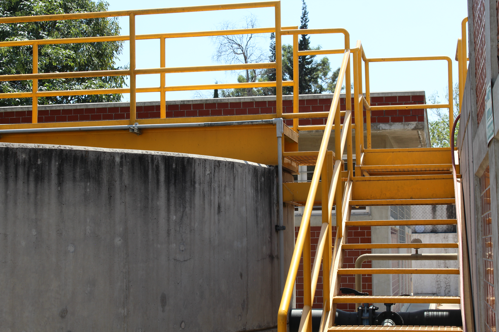
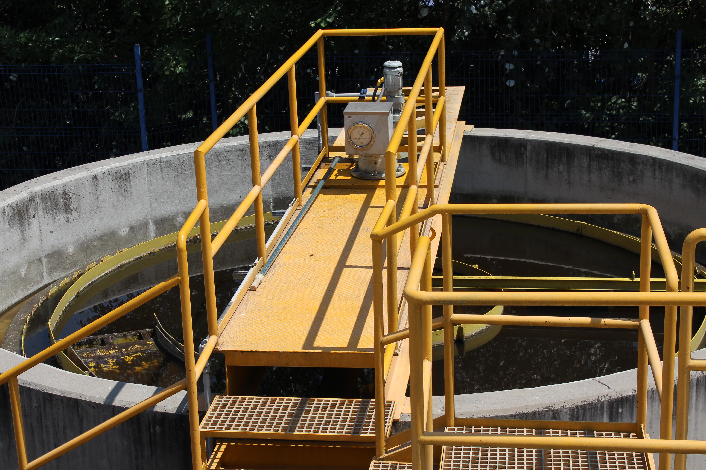
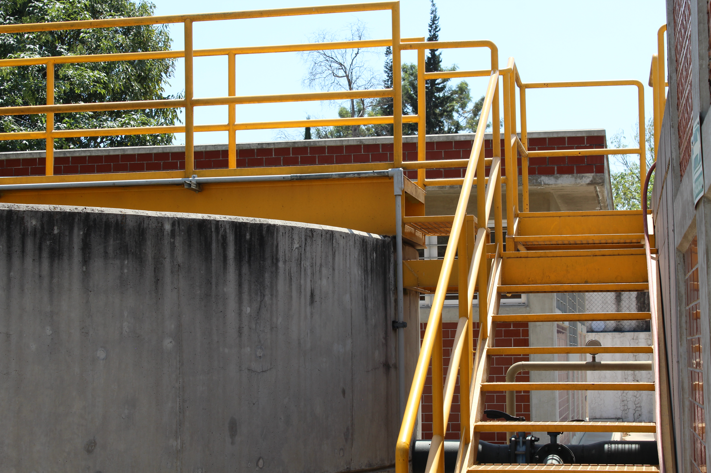
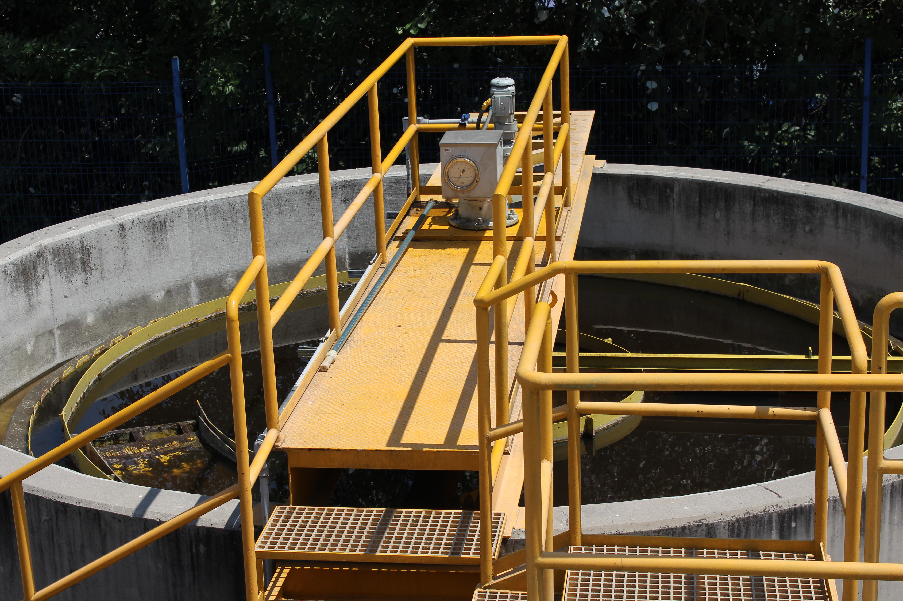
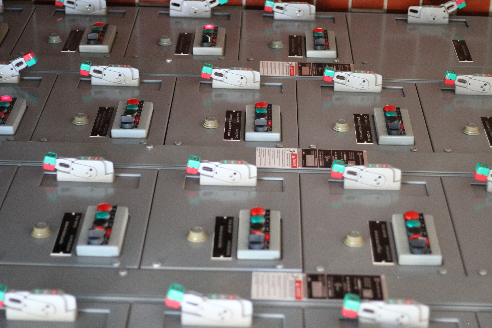
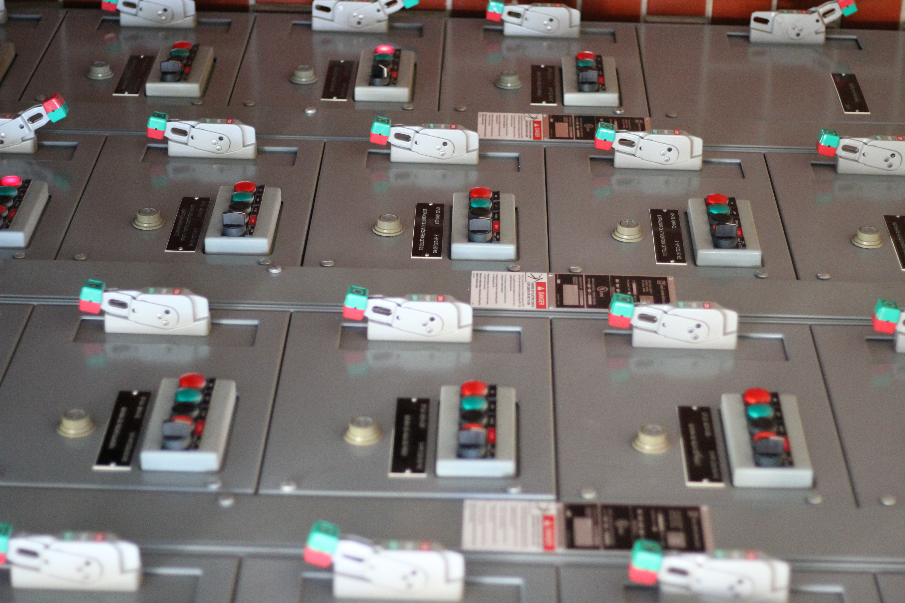

 


|Sistemas Biológicos | PTAR | FES Acatlán |
La PTAR de FES Acatlán opera con sistemas biológicos en reactores que utilizan microorganismos anaerobios (que no requieren oxígeno) y aerobios (que dependen del oxígeno) para degradar la materia orgánica. Cuenta con un reactor anaerobio UASB de 180 m³, donde microorganismos descomponen los residuos en ausencia de oxígeno, y un reactor aerobio de 100 m³ con lodos activados, el sistema más común en plantas de tratamiento en México. Aunque pequeña, la PTAR de Acatlán es una planta piloto de alta tecnología, con dos patentes y un sistema semi automatizado, difícil de encontrar en otras partes del país.